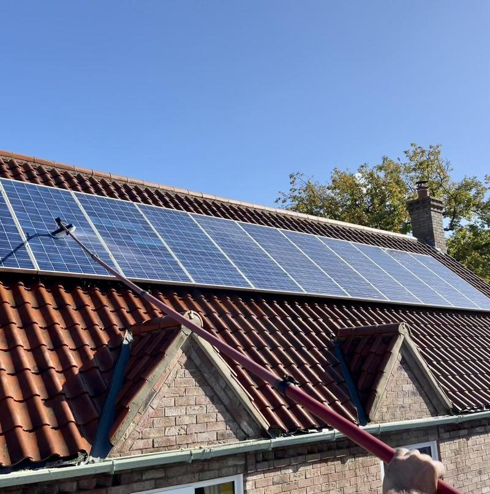
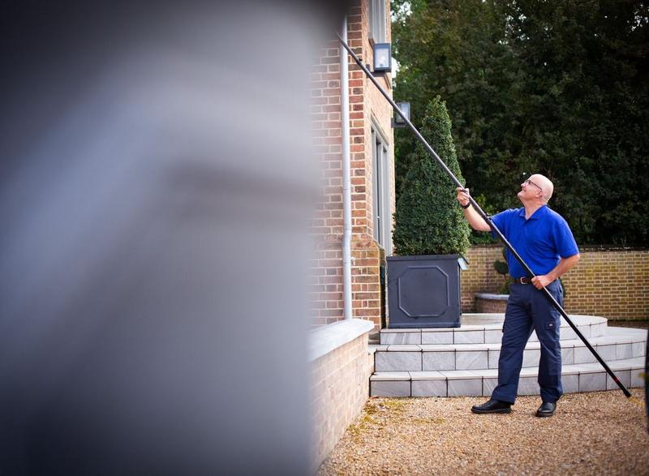

Home Solar panels
Solar panel cleaning in Watton, Thetford & nearby
Dirt, lichen and bird mess build up on panels over time. Andrew cleans them safely from the ground with specialist equipment, so they can keep working at their best.
5.0 from 50+ Google reviews. Fully insured, with free quotes and no obligation.

- 5.0 on Googlefrom 50+ reviews
- Fully insuredfull public liability cover
- 3 storeys and abovehigh-level glazing from the ground
- 10+ yearsin the trade
What’s included
- Dirt, lichen and bird mess removed
- Cleaned safely from the ground
- Safe, eco-friendly cleaning methods
- Flexible scheduling to suit you
- Satisfaction guarantee for peace of mind

Why people choose KAT
Dirt, lichen and bird mess block sunlight. Keeping panels clean helps them work as well as they can, and Andrew does it without anyone going on the roof.
- Cleaned from the ground
- Panels are cleaned safely from the ground using specialist equipment.
- Gentle on your panels
- Gentle techniques that protect your panels, with safe, eco-friendly cleaning methods.
- Over a decade of experience
- Rated 5.0 from 50+ Google reviews, and fully insured.

What customers say
Rated 5.0 from 59 Google reviews.
We have been using Andrew to clean our windows since we moved into our bungalow 3 years ago, and have recommended him to others. We also have our Solar Panels cleaned by him on a regular basis which has enable the panels to maintain their efficiency and performance. Good service at a competitive price - well done KAT Window Cleaning.
Andrew was friendly and professional. He communicated promptly and completed the cleaning of our solar panels efficiently. I would recommend his services.
Edward S., Google review
After a long overdue roof cleaning job completed our attention turned to the windows. Andrew from KAT cleaning spent the day at our property in miserable wet weather, clearing all our gutters of years worth of growth. All windows,,fascias cleaned, guttering and downpipes. A top job was also done on our conservatory, again clearing years worth of growth and build up. All in all a very thorough job has been done by Andrew, a very friendly and professional man. I would highly recommend using KAT window cleaning service. You won’t be disappointed.
Paul B., Google review
Andrew offers a fantastic service! He is really friendly and reliable. He has been cleaning our windows for about a year now and always does a great job. Would highly recommend!
Gemma L., Google review
How it works
From your first message to clean glass on a schedule, in four stops.
-
Ask for a quote
Fill in the form or give Andrew a call. Tell us about the building, or homes, and what you need cleaned.
-
Get your price
We can arrange a free site visit, or simply quote from photos. No obligation either way.
-
Book in
Choose how often: weekly, monthly, every 2 months or a one-off. We book a date that suits you and the site.
-
Stay informed
You'll get a reminder the day before each clean and a message when it's done, with electronic invoicing for businesses.
or call 07932 008040
Questions people ask
Anything else, just ask. A quick call is usually the fastest way.
All questions and answersWhy clean solar panels?
Dirt, lichen and bird mess block sunlight. Keeping panels clean helps them work as well as they can.
Do you need to go on the roof?
No. Panels are cleaned safely from the ground using specialist equipment.
Get a free quote
Tell us a little about the building, or your home, and what you’d like cleaned. Andrew will get back to you with a price, from photos or a free site visit. There’s no obligation.
Thanks. Your request is in.
Andrew will be in touch soon with a price.
If it’s urgent, call 07932 008040.